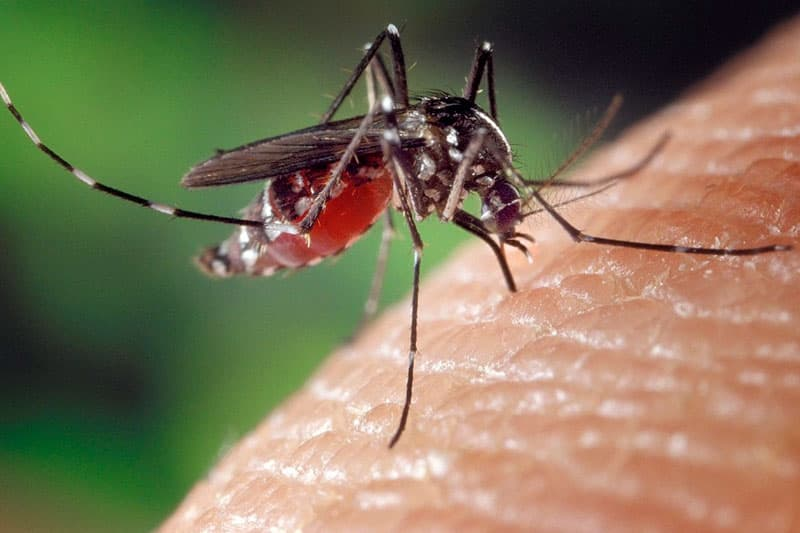
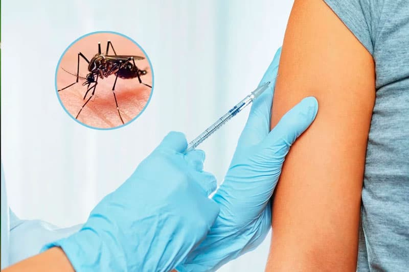

COMO PREVENIR EL DENGUE
Prevenga las picaduras de mosquitos

-
El dengue se transmite a las personas por medio de las picaduras
de mosquitos infectados.
-
Los mosquitos que transmiten el virus del dengue pican durante el
día y la noche. Estos tipos de mosquitos también transmiten los
virus del chikunguña y del Zika.
-
La mejor manera de prevenir estas enfermedades es protegerse de
las picaduras de mosquitos.
- Encuentre un repelente de insectos adecuado para usted.
Vacuna contra el dengue

Hay una nueva vacuna contra el dengue disponible en los territorios
de los Estados Unidos Samoa Estadounidense, Puerto Rico y las Islas
Vírgenes Estadounidenses, y los estados libres asociados, incluidos
los Estados Federados de Micronesia, la República de las Islas
Marshall y la República de Palaos.
La vacuna está aprobada para usarse en niños de 9 a 16 años con
infección previa por el virus del dengue, confirmada por un
laboratorio, y que vivan en áreas donde el dengue es endémico
(común).
La vacuna no está aprobada para usarse en viajeros de los Estados
Unidos que estén visitando, pero no viviendo en un área donde el
dengue es común.
Use repelente de insectos
Use repelentes de insectos registrados en la Agencia de Protección
Ambiental (EPA, por sus siglas en inglés) que tengan uno de los
ingredientes activos que figuran abajo. Cuando se usan de acuerdo
con las instrucciones, se ha comprobado que los repelentes de
insectos registrados por la EPA son seguros y eficaces, aun para las
mujeres embarazadas y las que están amamantando.
- DEET
-
Picaridina (conocida como KBR 3023 e icaridina fuera de los EE.
UU.)
- IR3535
-
Aceite de eucalipto de limón (OLE, por sus siglas en inglés) o
para-mentano-diol (PMD)
- 2-undecanol
Consejos para todos Siempre utilice los repelentes
de insectos según las instrucciones.Vuelva a aplicar el repelente de
insectos según las indicaciones.
- No aplique repelentes en la piel debajo de la ropa.
-
Si también usa filtro solar, aplíquese el filtro solar primero y
después el repelente de insectos.
Prevención en viajes
El dengue se propaga en más de 100 países en todo el mundo. El 40
por ciento de la población mundial, alrededor de 3000 millones de
personas, vive en áreas con riesgo de dengue. El dengue es una causa
principal de enfermedad en las áreas con riesgo. Cada año, hasta 400
millones de personas se infectan con dengue. Aproximadamente 100
millones de personas se enferman por la infección y 22 000 mueren
por dengue grave.
Antes del viaje
- Revise las recomendaciones para viajeros específicas por país, los avisos de salud y las advertencias.
- Visite un centro médico para viajeros o a su proveedor de atención médica para obtener atención antes del
viaje.
- Lleve un repelente de insectos registrado en la Agencia de Protección Ambiental (EPA). El dengue se
propaga por medio de las picaduras de mosquitos. Prevenga las picaduras de mosquitos para reducir su riesgo
de contraer el dengue u otros virus como el del chikunguña o el del Zika.
- Lleve acetaminofeno (también conocido como paracetamol fuera de los Estados Unidos), en lugar de aspirina
o ibuprofeno, en su botiquín de primeros auxilios. Estos medicamentos se pueden usar para manejar la fiebre
y el dolor en el cuerpo en caso de que usted contraiga dengue.
Durante el viaje
- Tome medidas para prevenir las picaduras de mosquitos a fin de protegerse y proteger a su familia.
- Permanezca en lugares con aire acondicionado y que tengan malla o tela metálica en las puertas y ventanas.
- Duerma bajo un mosquitero si no hay disponibles cuartos con aire acondicionado o con mallas o telas
metálicas en las puertas y ventanas, o si duerme al aire libre.
- Consulte a un proveedor de atención médica si presenta fiebre o síntomas de dengue.
Después de su viaje
- Aunque no se sientan enfermos, los viajeros que vuelvan de una zona con riesgo de dengue deben tomar
medidas para prevenir las picaduras de mosquitos durante 3 semanas, de manera que no transmitan el dengue a
otros mosquitos que podrían transmitir el virus a otras personas.
- Protéjase de las picaduras de mosquitos
Consejos para todos Siempre utilice los repelentes
de insectos según las instrucciones.Vuelva a aplicar el repelente de
insectos según las indicaciones.
- No aplique repelentes en la piel debajo de la ropa.
-
Si también usa filtro solar, aplíquese el filtro solar primero y
después el repelente de insectos.
Eliminar criaderos de zancudos
- Eliminando todos los recipientes en desuso que puedan acumular agua (como latas, botellas, neumáticos).
- Dando vuelta los objetos que se encuentran en el exterior y pueden acumular agua cuando llueve (baldes, palanganas, tambores, botellas).
- Cambiando el agua de bebederos de animales, colectores de desagües de aire acondicionado o lluvia, dentro y fuera de la casa, cada 3 días. Recordá frotar las paredes de los recipientes con una esponja o cepillo a fin de desprender los huevos de mosquito que puedan estar adheridos.
- Rellenando los floreros y portamacetas con arena húmeda.
- Manteniendo los patios y jardines limpios, ordenados y desmalezados.
- Limpiando canaletas y desagües de lluvia de los techos.
- Tapando los tanques y recipientes que se usan para recolectar agua.